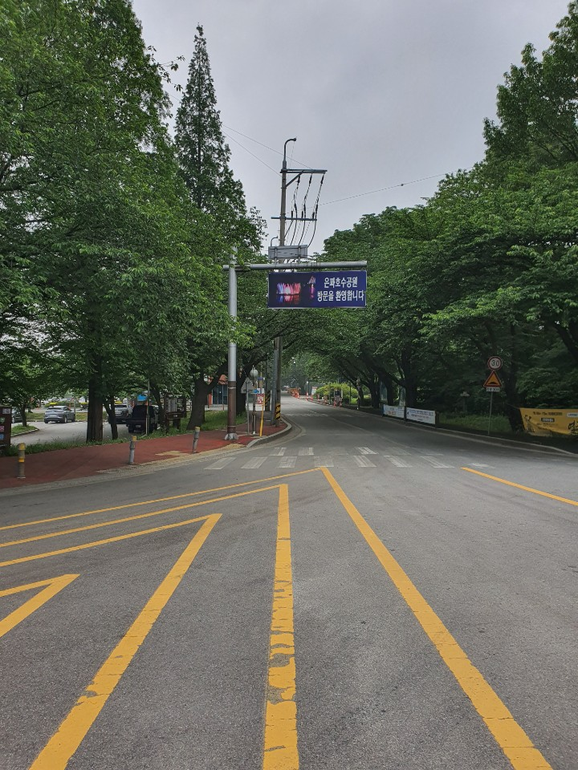

본래 농업용 저수지였으나 저수지를 중심으로 인근의 작은 산들이 포함하여 2,578,524평방미터가 1985년 국민 관광지로 지정되었고 순환도로가 완공되어 누구나 자동차를 타고 아흔아홉 구비라는 은파관광지의 주변을 모두 구경할 수 있게 되었다. 봄철이 되면 화사한 벚꽃길로 유명하여 친구,가족,연인들의 사랑을 받고 있다.

본래 농업용 저수지였으나 저수지를 중심으로 인근의 작은 산들이 포함하여 2,578,524평방미터가 1985년 국민 관광지로 지정되었고 순환도로가 완공되어 누구나 자동차를 타고 아흔아홉 구비라는 은파관광지의 주변을 모두 구경할 수 있게 되었다. 봄철이 되면 화사한 벚꽃길로 유명하여 친구,가족,연인들의 사랑을 받고 있다.
물빛이 아름다워 은파라 불리는 곳에 위치한 이 다리는 사랑을 테마로 호수의 동서를 잇고 있다.
낮에는 햇살에 반짝이는 물빛으로 밤에는 화려한 조명으로 밤을 수놓은 야경이 유명한 곳이다
| 구분 | 기간 | 시간 | 비 고 |
|---|---|---|---|
| 당 초 | 연 중 | 일몰 ~ 23:00 | |
| 현 행 | 연 중 | 일몰 ~ 22:00 |
| 기 간 | 시 간 | 비 고 |
|---|---|---|
| 4월~10월 | 12:00~22:00(매시간당 20분) | 11회 |
| 3월, 11월 | 12:00~22:00(2시간당 20분) | 5회 |
| 12월~2월 | 미 가 동 | 동파방지 |
풍경
전북 군산시 은파순환길 9